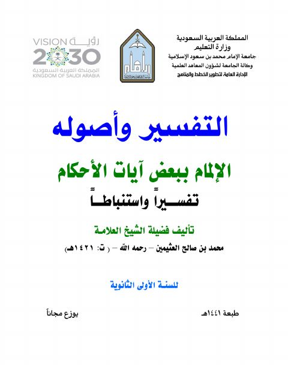

التفسير وأصوله، الإلمام ببعض آيات الأحكام تفسيراً واستنباطاً للسنة الأولى الثانوية
Authors: محمد بن صالح العثيمين
Publishers: الإدارة العامة لتطوير الخطط والمناهج
Download Downloads need an internet connection.
- Published
- 1441هـ 2020م
- Country
- الرياض، السعودية
- Edition
- 1
- Volumes
- 1
- Pages
- 256
- Type
- كتاب
- Category
- التفسير وعلوم القرآن
Description
▫️ العنوان: التفسير وأصوله، الإلمام ببعض آيات الأحكام تفسيراً واستنباطاً للسنة الأولى الثانوية ▪️ المؤلف: #محمد_بن_صالح_العثيمين ▫️ الناشر: #الإدارة_العامة_لتطوير_الخطط_والمناهج ▪️ تاريخ النشر: 1441هـ 2020م ▫️ بلد النشر: الرياض، #السعودية ▪️ الطبعة: 1 ▫️ عدد الأجزاء: 1 ▪️ الصفحات: 256 ▫️ نوع الوعاء: #كتاب ▪️ التصنيف الرئيسي: #التفسير_وعلوم_القرآن ۪